Meridian：面向非城市环境的度量语义 Primitive 跨视角地理定位Meridian: Metric-Semantic Primitive Matching for Cross-View Geo-Localization Beyond Urban Environments
与 GNSS 缺失场景、跨视角定位和 pose graph 全局约束强相关，可作为 SLAM 重定位模块参考。
一句话工作总结
通过航空图与地面 RGB-D 语义几何 primitive 匹配，为 GNSS-denied SLAM 提供全局重定位和漂移约束。
摘要
Meridian 用高层 metric-semantic primitives 匹配航空影像和地面机器人 RGB-D 子图，在无需针对目标区域训练或调参的情况下实现全局定位。方法构造一致性指标来估计子图位姿分布，并在鲁棒 pose graph optimization 中剔除外点，最终在自动驾驶、园区和野外环境共 19 km 轨迹上取得平均 2.4 m 的优化轨迹误差。
Successful robot automation requires accurate global localization to support repeatability, task planning, goal specification, and safe operation. However, reliable localization in GNSS-denied environments remains an open problem. Overhead aerial imagery offers a promising solution, but existing approaches primarily target structured urban environments and have been rarely demonstrated in unstructured natural terrain. Limitations of the state-of-the-art include a reliance on models trained for specific environments, as well as difficulty handling repetitive geometries and featureless landscapes commonly found in natural outdoor areas. To overcome these challenges, we present Meridian, a method for matching high-level metric-semantic primitives across aerial images and ground robot RGB-D camera data that achieves accurate global localization and generalizes well across diverse environments, all without any training or algorithmic fine-tuning on area-specific data. We formulate novel consistency metrics to estimate a distribution over robot submap poses and to reject outlier hypotheses in a robust pose graph optimization step for accurate robot trajectory estimation. We demonstrate that our algorithm can localize a ground robot across a wide variety of environments, including an autonomous driving dataset, a park and campus area, and a wilderness camp, with an average optimized trajectory error of 2.4 m over 19 km of ground traversal.
中文解读摘录
- 日期：2026-06-04
- 链接：arXiv / PDF
- 作者简写：M. Peterson, Q. Li, Y. Jia 等
- 领域标签：GNSS-denied / 跨视角地理定位 / RGB-D submap / Pose Graph
- 背景/动机：GNSS 缺失环境中，机器人需要从外部地图或航空影像获得全局定位；但现有跨视角方法多依赖城市结构和区域特定训练。
- 主要创新点/工作：用 metric-semantic primitives 匹配航空图像与地面 RGB-D 子图，构造一致性指标估计 submap pose 分布，再通过 robust pose graph optimization 剔除外点并优化轨迹。
- 为什么值得关注：它不是 GNSS 原始观测融合，但能给 SLAM 提供全局重定位候选和漂移约束；覆盖园区、自然地形、自动驾驶数据和 19 km 轨迹，实用性较强。
图表/页面预览
{kind=link}
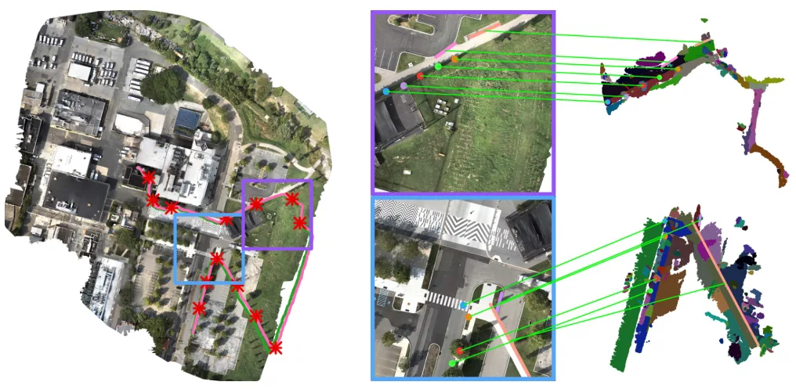
{kind=link}
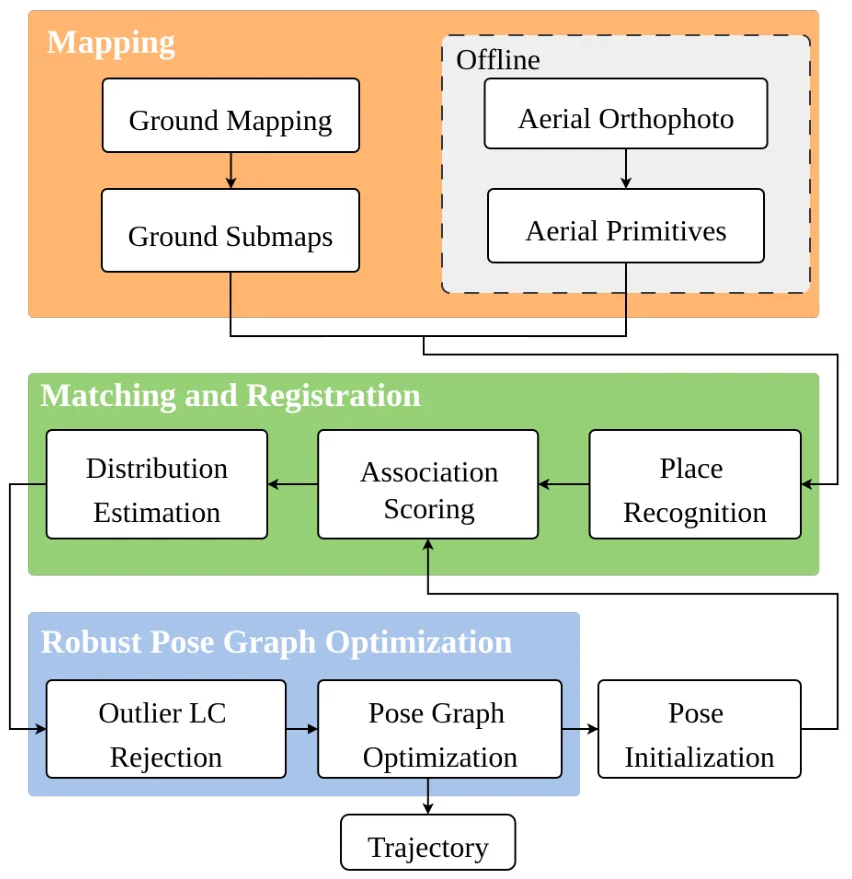
{kind=link}
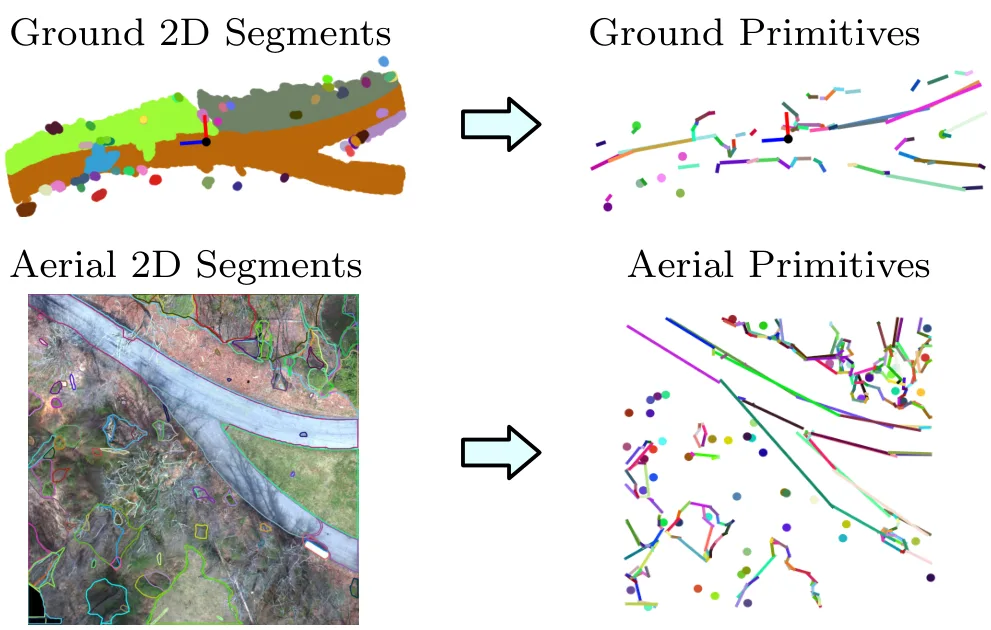
{kind=link}
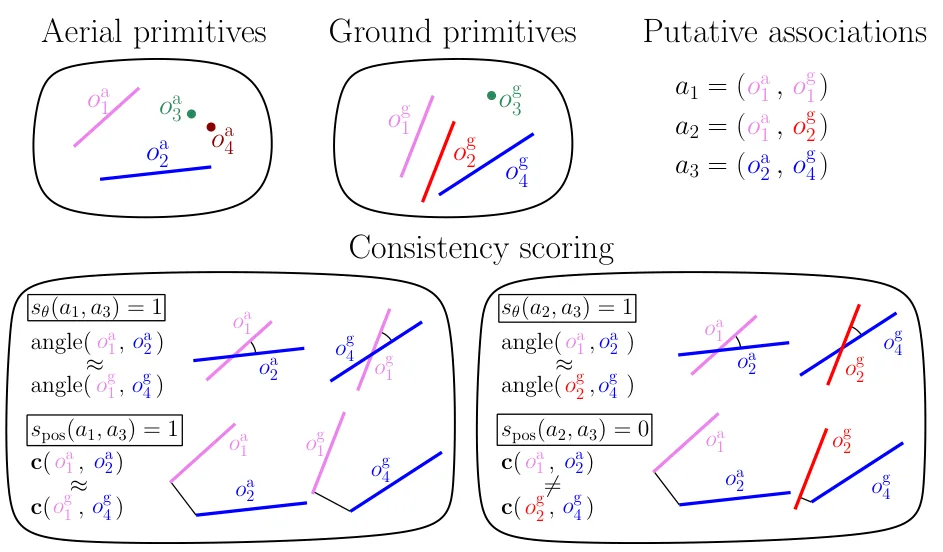
{kind=link}
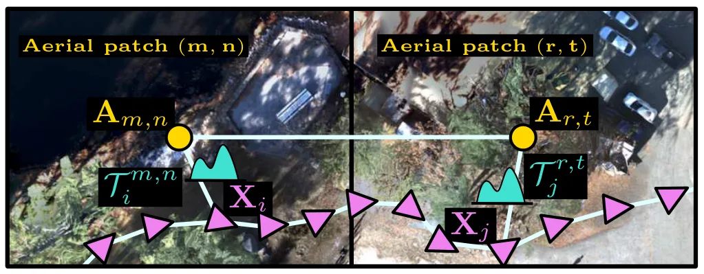
{kind=link}
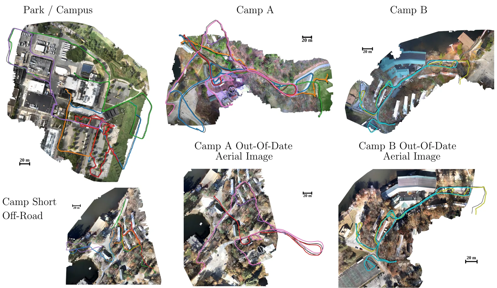
{kind=link}
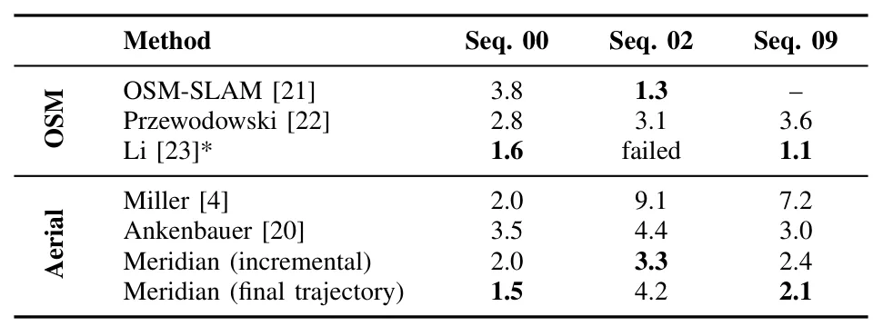
{kind=link}
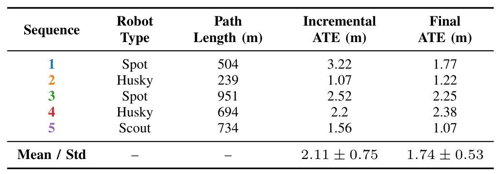
{kind=link}
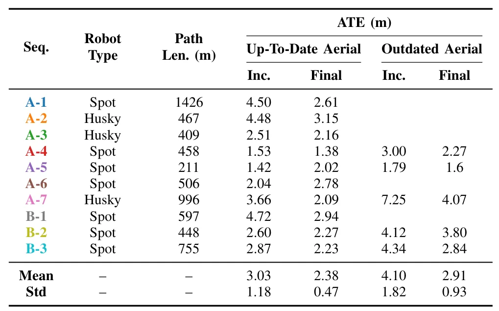
{kind=link}
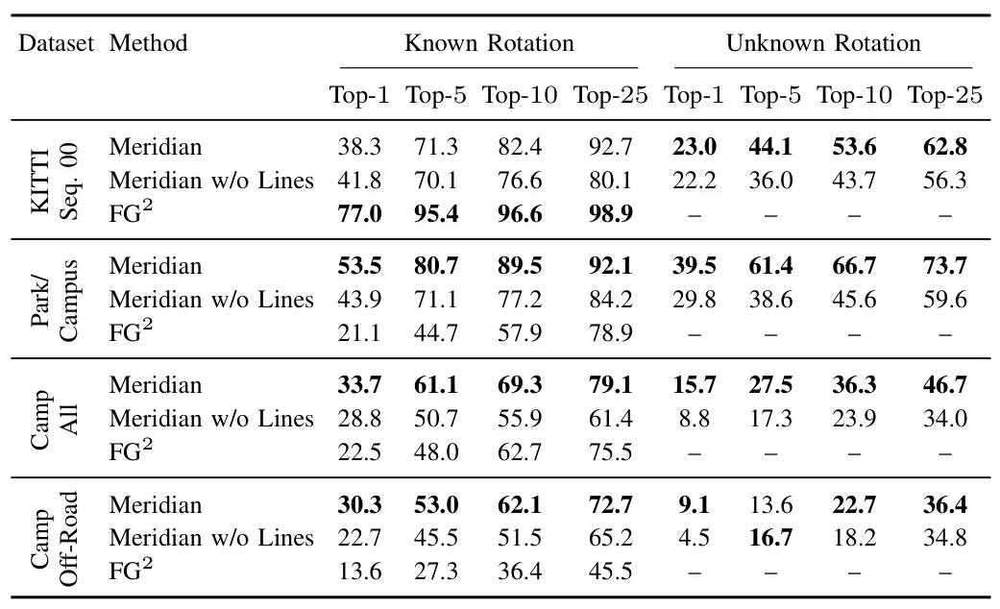
{kind=link}
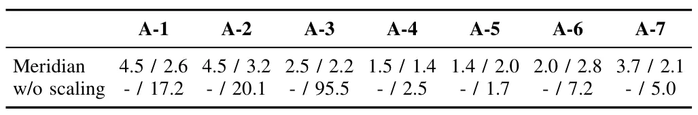